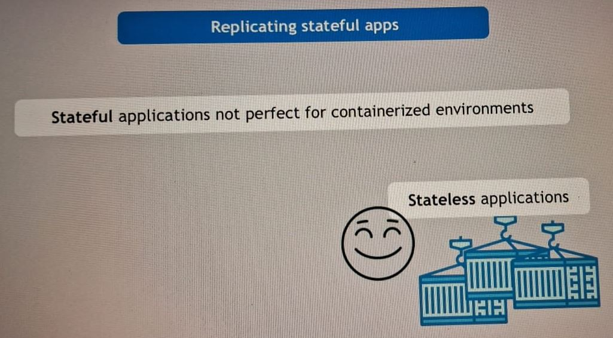
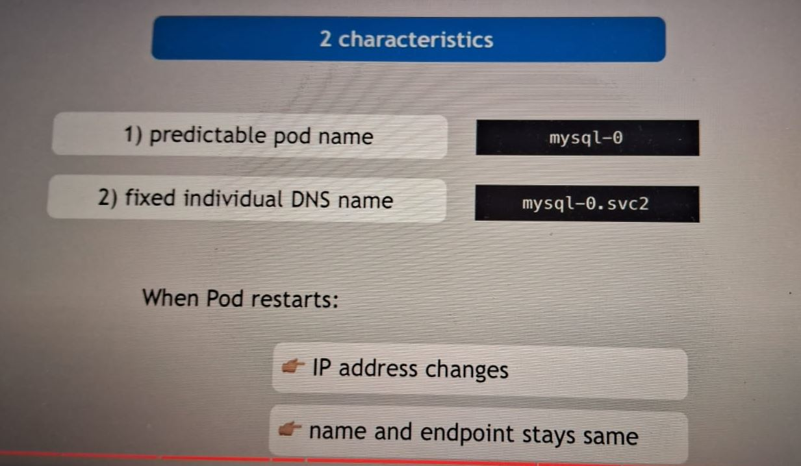
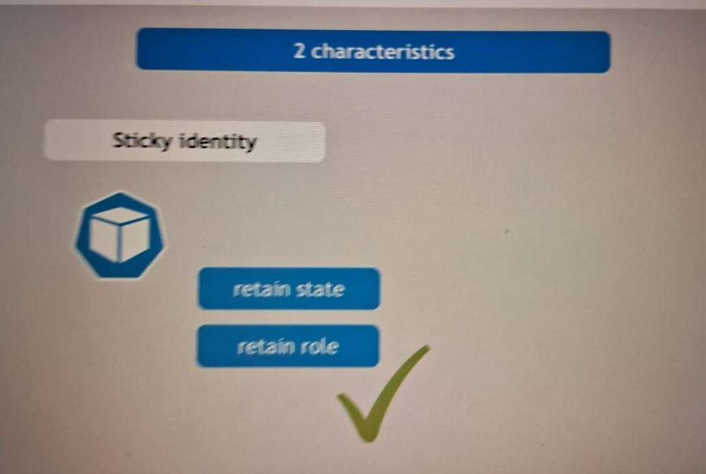

Definition: StatefulSet is the workload API object used to manage stateful applications. It manages the deployment and scaling of a set of Pods, and provides guarantees about the ordering and uniqueness of these Pods. It is mainly used for database applications where data read and write are critical.
Image 1: Description of image 1.

Image 2: Description of image 2.
Image 3: Description of image 3.
Image 4: Description of image 4.